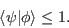
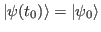

Next: Standard Redfield Theory
Up: Bath Correlation Functions and
Previous: Bath Correlation Function
Contents
A very important quantity is the Fourier transform of the bath correlation
function
It is sometimes referred to as spectral
density, but we will reserve this name for a different quantity.
We will follow Ref. [Mukamel1995]. The Fourier transform

can be split into even and odd parts defined as
so that
It can be shown (see [Mukamel1995]) that
 |
(1.8) |
and
Due to the relation between positive and negative frequency values
of the Fourier transform of the bath correlation function, we can
define it completely through the odd function

which is a Fourier transform of the imaginary part of the correlation
function.
Spectral density
Next: Standard Redfield Theory
Up: Bath Correlation Functions and
Previous: Bath Correlation Function
Contents
Tomas Mancal
2016-10-10